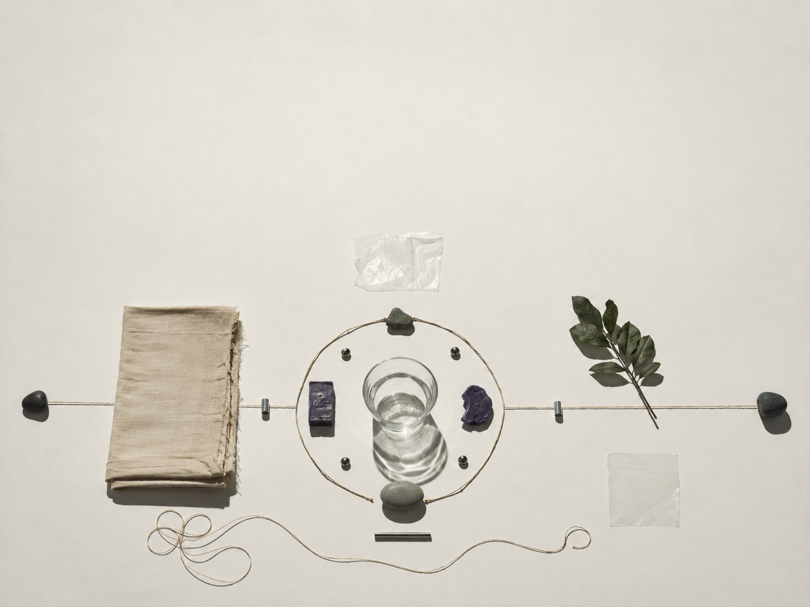
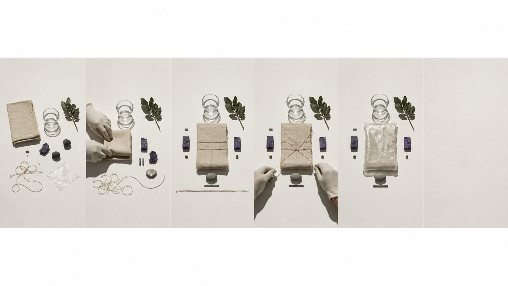
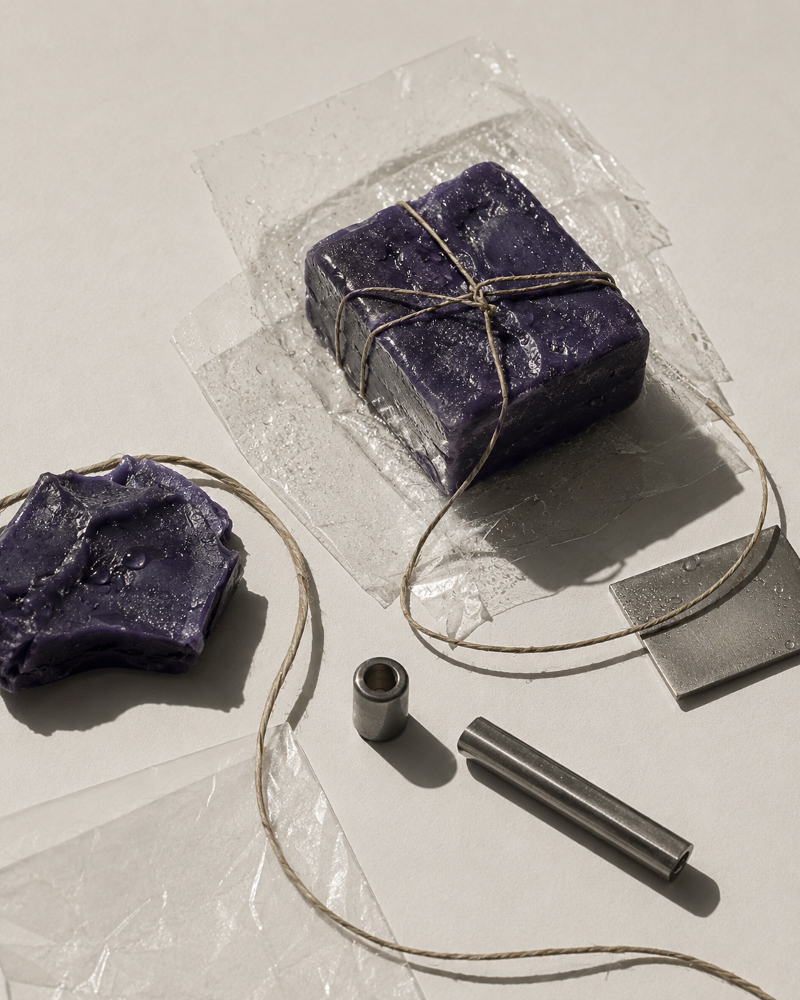
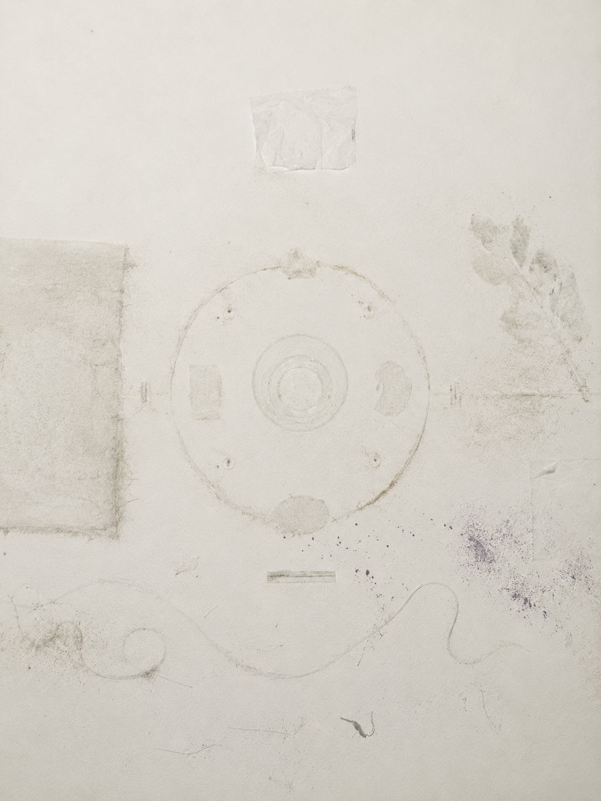
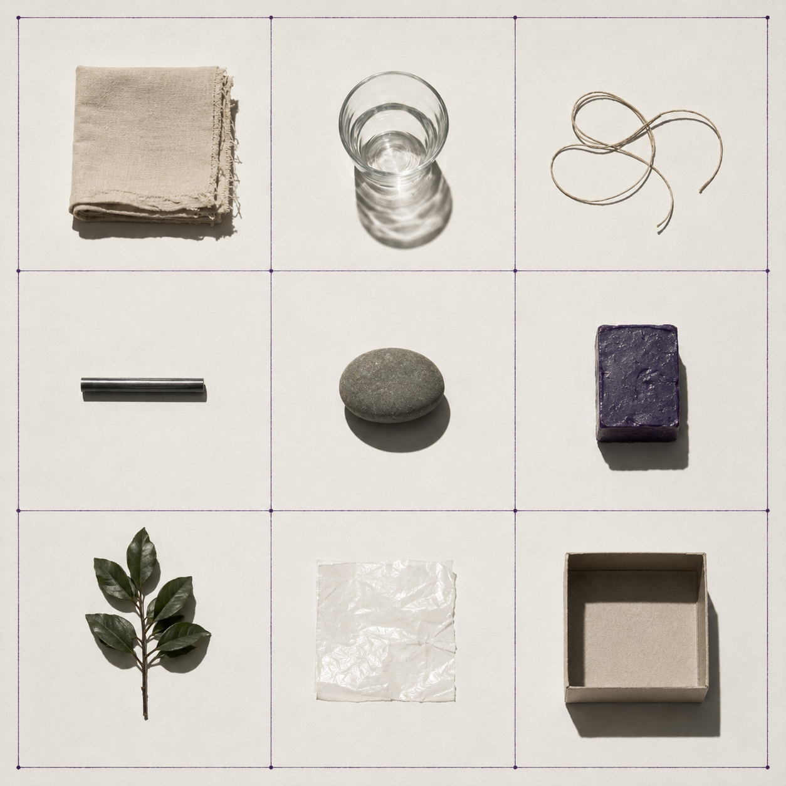

视觉方法 / PROCESS
将单次动作拆分为准备、执行、停顿与复位，比较重复中的细微偏差。
A12 · FIELD NOTES
未知仪式
将日常重复动作转译为无宗教归属的陌生仪式与行为档案。

项目以叠衣、擦拭、摆放、封存与等待等日常动作为观察对象。通过连续摄影、动作分解、物件编号与痕迹采样，记录行为前后的顺序、位置和残留状态，再将重复步骤整理为图表、标记与图像档案。视觉结果削弱具体生活情境，使熟悉动作呈现出近似仪式的陌生结构，并讨论当功能、习惯与情感被暂时分离，日常行为如何获得规则、边界与新的观看方式。
将单次动作拆分为准备、执行、停顿与复位，比较重复中的细微偏差。
最初只是注意到许多日常化的家务动作都有稳定的先后顺序。把这些动作逐段记录后，减少人物与空间信息，只保留物件、痕迹和时间，让动作本身成为可被比较的记录单位。



